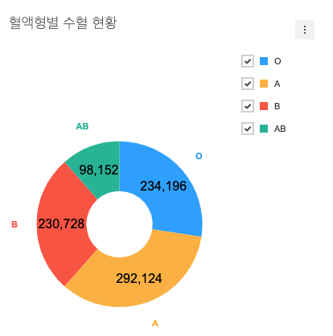

4. 도넛 차트에 추가 옵션 적용해보기¶
4.1. 도넛 차트에 series.showLabel 옵션 적용하기¶
series.showLabel 옵션을 사용하여 도넛 차트 내에 수치를 표현할 수 있습니다.
// src/index.js
...
const donutChartOptions = {
...
series: {
...
showLabel: true
}
};
series.showLabel 옵션 적용 방법에 대해 좀 더 궁금하다면 아래 위키 문서를 확인하세요.
4.2. 도넛 차트에 chart.format 옵션 적용하기¶
series.showLabel 옵션을 적용하여 나타난 값이 number 포맷으로 나오지 않아서 어색한 부분을 확인할 수 있습니다.
앞서 살펴봤던 차트의 일반적인 기능을 소개하는 문서에서 값을 포맷팅 하는 부분을 찾아 아래처럼 적용하여 숫자 형식으로 포맷팅 합니다.
// src/index.js
const donutChartOptions = {
chart: {
...
format: '1,000'
}
...
};
4.3. 도넛 차트에 series.showLegend, series.labelAlign 옵션 적용하기¶
series.showLegend 및 series.labelAlign 옵션 적용 방법을 알아 봅니다.
미리 적용해 놓은 옵션 위에 문서에서 확인한 옵션을 추가로 적용합니다.
// src/index.js
//...
const donutChartOptions = {
...
series: {
...
showLegend: true,
labelAlign: 'outer'
}
};
series.showLegend, series.labelAlign 옵션에 대해 좀 더 궁금하다면 아래 링크를 확인하세요.
4.4. 결과 확인¶
위 코드의 결과입니다.
